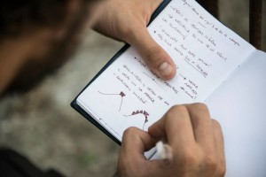
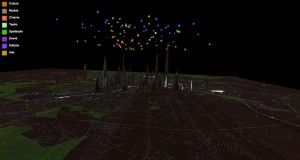

Nel titolo di questo post cito Nicola perché alla fine di ogni viaggio capita che mi frulli in testa prepotentemente una frase e alla fine di questo viaggio è proprio questa frase di Nicola che continua a farmi pensare.
Nicola, insieme a Simona, Fabio e Anna Maria, ha fondato Aste e Nodi, un’agenzia informale di sviluppo locale, “informale” perché vuole sperimentare nuovi approcci per lo sviluppo a partire da persone formate in discipline diverse con l’intento di occuparsi non solo delle strutture fisiche, ma anche delle relazioni sociali. L’attività di Aste e Nodi inizia nel 2009 con l’organizzazione di un workshop estivo a Torre Orsaia, nel Cilento, per studenti universitari interessati ad interrogarsi sul futuro della comunità e sugli scenari possibili di sviluppo del luogo, costruendo delle proposte innovative in cambio di ospitalità nel paese da parte delle famiglie che lo abitano. La formula risulta vincente al punto che dal 2009 i workshop estivi di Aste e Nodi non si sono mai fermati, il comune di Torre Orsaia ha recuperato un vecchio asilo per farne un ostello, sono circa 70 gli studenti che in estate vengono ospitati e le università campane utilizzano le strutture rimesse in funzione dai workshop per organizzare corsi ed eventi. Perché Torre Orsaia? Perché uno dei fondatori di Aste e Nodi è nato lì e perché si sta spopolando, così come l’area circostante, e allora l’idea è quella di inventarsi il modo per generare un flusso diverso, che non sia stanziale, ma che nella sua permanenza temporanea apporti del nuovo e alimenti il dibattito politico. Ma perché non permettere anche a chi è andato via o a chi è affezionato a quel territorio di partecipare alla vita politica e allo scambio di idee sullo sviluppo? Nasce così il progetto Eco/Cilento che nel 2012 vince il bando “Smart Cities and Social Innovation”. Eco/Cilento è una piattaforma di cooperazione e di condivisione on-line alla quale hanno aderito 12 comuni del Cilento che prevede la costruzione di un database territoriale in cui mappare gli attori del territorio (amministrazioni, organizzazioni sociali, imprese, persone fisiche) per sperimentare la discussione aperta su tematiche e decisioni relative al territorio, per diffondere attività, risorse e per cercare di creare sinergie. Il punto focale rimane quello dell’informazione e della trasparenza del dibattito politico per condividere le scelte strategiche e dunque democratizzare le decisioni.
{kind=link}
Di informazione, comunicazione e trasparenza parliamo anche con Daniela Vellutino, glottologa docente di “Comunicazione pubblica e linguaggi istituzionali” presso l’Università di Salerno, che a partire dal suo laboratorio di “Analisi dei testi per la comunicazione pubblica” ha dato vita a Diritto di Accesso Civico, un progetto sugli open data tramite il quale Daniela, con grande entusiasmo e una passione contagiosa, insegna come gli open data ricavati da fonti pubbliche possano essere riutilizzati, dal data journalism alle infografiche alla scrittura creativa. Lo scorso anno Daniela ha attivato una collaborazione con OpenCoesione utilizzando il portale come principale fonte di open data e con Monithon, iniziativa indipendente di monitoraggio civico. Chissà che nella nostra collaborazione con Monithon per i monitoraggi sui beni confiscati in Campania (di cui abbiamo parlato qui) non ci si ritrovi anche a collaborare con Daniela e i suoi studenti, chissà…
Un intervallo romano spezza il viaggio in terra campana e un sabato mattina ci ritroviamo in una Casa delle Culture affollatissima dove si parla di cultura e open data con Salvatore Iaconesi e Oriana Persico, parte del collettivo Art is Open Source, che presentano il loro nuovo progetto realizzato in collaborazione con l’ Assessorato alle Politiche Culturali del 1° Municipio di Roma: EC(m1) è un infoscape dell’ecosistema culturale romano in cui i nodi vengono visualizzati in tempo reale tramite l’attività pubblica di chi usa i social network per esprimersi in tema di cultura. Sono stati così individuati tra i nodi dell’ecosistema gli hub più forti e gli influencers del mondo culturale romano. EC(m1) rilascia dati e informazioni sull’ecosistema culturale romano in open data perché vuole rendere accessibile questo set di dati, rendere visibili le reti relazionali e di influenza per individuare nuove possibilità di collaborazione, di produzione, di condivisione anche di beni materiali necessari per la produzione culturale, sperimentando nuove forme di ascolto di dialogo e di riutilizzo di open data.
{kind=link}
Trasparenza e informazione dunque al centro di sperimentazioni che guardano allo sviluppo e all’innovazione, con progetti già avviati e strumenti ancora da testare. Cosa “romperà” di più?
[to be continued]